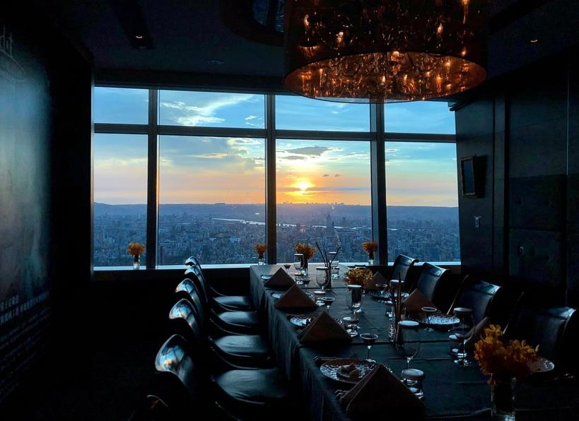
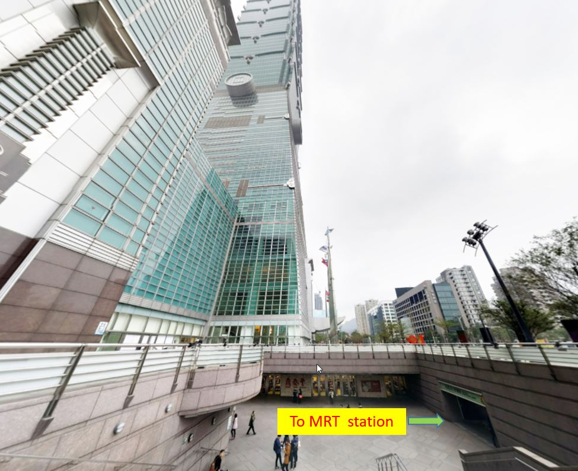

Symposium Banquet
Invited speakers and all attendees with full registration are welcome to the symposium banquet. Extra banquet tickets for accompanying people or student attendees can be purchased at registration desk for TWD 2,500.
Getting to the banquet
We provide a shuttle bus from the Academia Sinica Activity Center to Diamond Tony. We gather at 17:30 in front of the activity center.
Alternatively, you may go to the baqutte venue by taking the MRT and get off at the Taipei 101/World Trade Center station. Go to EXIT 4 (Taipei 101), and you will see the 101 building. Enter the building and then take the elevator to the 85th floor.
You may also reach the venue by taxi. Just show the following address to the taxi driver.
台北101大樓
台北市信義區信義路五段7號85樓
Getting back to the hotels
Exit 4 of the The MRT Taipei 101/World Trade Center station is on the same block of the Taipei 101 building. Just go to the B1 plaza (basement level 1) and the entrance to the MRT station will be right in front of you.
If you would like to take a taxi, please go to the taxi call station on basement level 1 of the Taipei 101 building.